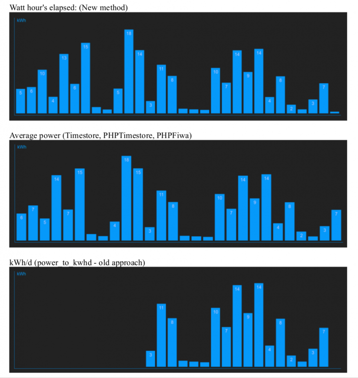

Trystan (or anybody else),
how is calculated total value kWh/d and how average power? Why am I asking (and I can be wrong with my presumption):
Im monitoring total daily electricity consumption via "power to kWh/d" method and looging them into feed. At My electricity panel I see bars related to total daily consumption. In paralel Im logging instanatenous power in kW into PHPFIWA log. From this feed I draw timestoredaily bars with average power in daily period. And now is the matter:
When I take total consumption a day (in kWh) and divide it by 24, I would expect to get the same value in kW, which is calculated as average power in that same day. But these value differs significantly from each other. And I dont know, which one (if any) is correct. Am I wrong in my presumption, that these values should be (almost) equal? Isn't total daily consumption divided by 24 equal to average power in the same time window?
Radek
Re: Average power calculated vs total energy consumptions discrepancy
Yes your right they should be the same, however there is a difference in implementation that can cause errors.
All the recent work on calculating watt hours on the emontx, the node interface and recording accumulating watt hours instead of daily values in emoncms is designed to fix the problems with the old power_to_kwhd approach and the less old average power approach. see http://openenergymonitor.org/emon/node/3995
Here is a screenshot of my own data calculating daily kWh using the three different approaches:

Both the power_to_kwh/d and average power method depend on very high reliability of posted data, discrepancies are introduced if the radio link or basestation or emoncms goes down for any period of time.
The power_to_kwhd calculation will calculate the energy increment since the last posted datapoint by multiplying the 2nd last power value by the time between the 2nd last power datapoint and the last power datapoint. If for any reason there is a gap in the monitored data and the last power value was large, lets say 3kW and a gap of 1 hour means that even if the actual power consumption reduced to a few hundred watts the amount of energy that is accumulated will be 3kWh.
The power_to_kwhd calculation resets at midnight server time.
The average power approach is a bit more complex, although it should deal better with the problem of data gaps as its less likely to be thrown out by large power values, discrepancies will still be introduced of course if there are any gaps.
The largest difference though can be due to the timezone problem that has been discussed here for some time:
- power_to_kwhd is set to midnight server time - not user timezone.
- The average power approach aligns with the user timezone, but then there is a slight alignment problem that means it may not be aligned precisely to the requested timezone - the new PHPFiwa engine fixes this alignment bug.
The conclusion I came to was that it was better to move the accumulating watt hours energy calculation to the emontx and then record the result in emoncms, http://openenergymonitor.org/emon/node/3995. This solves both the errors introduced by data gaps and timezone errors.
With almost a month and a half of running the new total watt hours elapsed calculation on the emontx here at home my reference meter an Elster A100C is reading 267.9 kWh elapsed and the EmonTx v3 running the watt hour total code is showing 273.4 kWh elapse, a 2% difference which is within the range we would expect given component tolerances and so on (This is with the standard calibration).
The next step is to get all this watt hour calculation on the emontx, posting to the emoncms node interface and updated visualisations all part of the standard OpenEnergyMonitor build.
I've been working on a new end-to-end home energy monitor build/application guide that goes through all the steps here: http://openenergymonitor.org/emon/node/4283